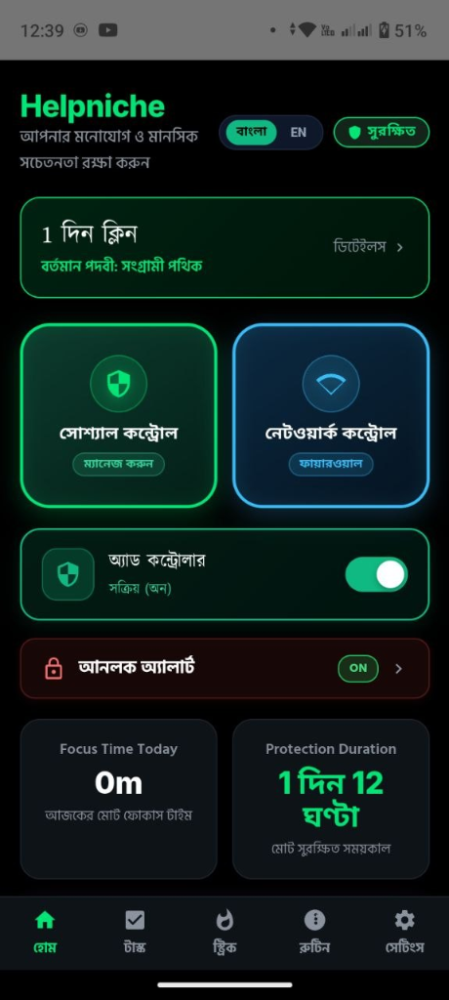

অশ্লীলতা ও অতিরিক্ত সোশ্যাল মিডিয়ার মোহ থেকে মুক্তি, ডোপামিন রিকভারি এবং হারানো একাগ্রতা ফিরিয়ে আনার আধুনিক বিজ্ঞানসম্মত প্ল্যাটফর্ম।

স্মার্টফোনের ক্ষতিকর নোংরা অ্যালগরিদম, অন্তহীন রিলস স্ক্রলিং ও আসক্তিকর সাইট ঠেকানোর সর্বোচ্চ প্রযুক্তি।
Instagram Reels, Facebook Reels এবং YouTube Shorts শনাক্ত করে স্বয়ংক্রিয়ভাবে ব্লক করে। Accessibility Service-এর মাধ্যমে চোখের পলকে ফিডে ফিরিয়ে আনে।
কোনো বাহ্যিক সার্ভারে ট্র্যাফিক না পাঠিয়ে সম্পূর্ণ ডিভাইসের ভেতরেই একটি সুরক্ষিত লোকাল ডিএনএস ভিপিএন তৈরি হয়, যা পর্নোগ্রাফিক ডোমেন ও বিজ্ঞাপন স্বয়ংক্রিয়ভাবে আটকে দেয়।
ফোনের যে অ্যাপগুলো আসক্তির কারণ, সেগুলোকে ব্ল্যাকলিস্টে যুক্ত করুন। খোলার চেষ্টা করলেই পূর্ণ স্ক্রিনের লাল সতর্কবার্তা উইন্ডো এসে অ্যাপটি জোরপূর্বক বন্ধ করে দেয়।
কাজের সময় নোটিফিকেশন শূন্য করে গভীর মনোযোগ ফিরিয়ে আনা এবং মানসিক ও আত্মিক শৃঙ্খলার ৫টি স্বতন্ত্র পোর্টাল।
পড়ার বা কাজের সময় ফোন কঠোর ফোকাস মোডে চলে যায়। অন্য অ্যাপে যাওয়ার চেষ্টা করলে সতর্কবার্তা দিয়ে স্ক্রিনেই আটকে রাখা হয়। সাথে অফলাইন ক্যাশড অ্যাম্বিয়েন্ট অডিও মনকে শান্ত রাখে।
দরূদ বা জিকিরের নির্দিষ্ট লক্ষ্যমাত্রা (১০০/৫০০ বার) নির্ধারণ, বিশুদ্ধ অর্থ ও পছন্দের অডিও আপলোড।
বড় ডায়নামিক ফুলস্ক্রিন টাচ প্যাড—স্ক্রিনে না তাকিয়েও কেবল আঙুলের স্পর্শে নিখুঁত ভাইব্রেশন সহ জিকির গণনা।
ফুল-স্ক্রিন এলার্ট স্ক্রিন—নির্ধারিত দোয়া পাঠ বা শর্ত পূরণ ছাড়া অ্যালার্ম বন্ধ না হওয়ার সুবিধা।
নামাজের ওয়াক্ত বা ক্লাসের সময়ে ফোন স্বয়ংক্রিয়ভাবে সাইলেন্ট/ভাইব্রেট হওয়া এবং সময় শেষে স্বাভাবিক ফেরা।
ফোন আনলক করলেই সচেতন করতে ব্যাকগ্রাউন্ড থেকে দরূদ শরীফ বা সতর্কতামূলক অডিও বেজে ওঠা।
খারাপ অভ্যাস ত্যাগ করে কতদিন মুক্ত থাকা গেছে তা সেকেন্ড ধরে পরিমাপ এবং তীব্র তাড়না ঠেকানোর জরুরি বিজ্ঞানসম্মত ব্যবস্থা।
১ দিন, ৩ দিন, ৭ দিন, ১৫ দিন এবং ৩০ দিনের মাইলস্টোন অর্জিত হলে স্বয়ংক্রিয়ভাবে স্ক্রিনে বিজয়ের সেলিব্রেশন উইন্ডো খোলে ও উৎসাহব্যঞ্জক অডিও বেজে ওঠে।
আত্মনিয়ন্ত্রণ হারালে রিসেট বোতামে চাপ দিলে একটি নিরাপদ ডায়ালগ খোলে, যেখানে রিল্যাপ্সের কারণ (গভীর রাতে ফোন ব্যবহার, একাকীত্ব, মানসিক চাপ ইত্যাদি) লিখে সেভ করা যায়, যাতে একই ভুল আর না হয়।
যখনই কোনো খারাপ চিন্তা বা আসক্তির তীব্র তাড়না আসবে, এই বোতামে চাপ দিলে তৎক্ষণাৎ বৈজ্ঞানিক "৪-৭-৮ শ্বাসের ব্যায়াম" ও ঠান্ডা পানির ঝাপটার গাইড ভেসে ওঠে।
এই অ্যাপের সবচেয়ে অনন্য বৈশিষ্ট্য হলো এটিকে ফাঁকি দেওয়া বা নিজের ইচ্ছায় সহজেই আনইনস্টল করা অসম্ভব।
ফোনে Device Admin সক্রিয় থাকায় সাধারণ উপায়ে আনইনস্টল অপশন বন্ধ থাকে। কোনো হঠকারী সিদ্ধান্তে অ্যাপ মুছে ফেলা সম্ভব নয়।
ফোনের সেটিংস অ্যাপে গিয়ে Helpniche-কে ফোর্স-স্টপ (Force Stop) বা পারমিশন অফ করার চেষ্টা করলেই অ্যাক্সেসিবিলিটি সার্ভিস তৎক্ষণাৎ সেটিংস বন্ধ করে হোমস্ক্রিনে ফিরিয়ে দেয়।
অ্যাপে কোনো স্থায়ী মাস্টার কোড নেই। জরুরি প্রয়োজনে টেলিগ্রাম বটের মাধ্যমে অ্যাডমিনের কাছে রিকোয়েস্ট পাঠাতে হয়। অ্যাডমিন যাচাই করে ম্যানুয়ালি ওটিপি অনুমোদন দিলে তবেই সীমিত সময়ের জন্য সাময়িক আনলক কার্যকর হয়।
ট্যাবগুলোতে ক্লিক করে ৩টি প্রধান স্ক্রিন ও তাদের ফিচারগুলো সরাসরি দেখে নিন।
লাইভ প্রটেকশন স্ট্যাটাস, দৈনিক অনুপ্রেরণামূলক বাণী, এমার্জেন্সি প্যানিক বাটন এবং এক-ক্লিকে কুইক দরূদ ও তসবিহ গণনা।
কোনো জটিলতা ছাড়াই সরাসরি ওয়েবসাইট থেকে আপনার ফোনে Helpniche সেটআপ করে নিন।
'Download Helpniche APK' বাটনে চাপ দিয়ে মাত্র ৬.৫ মেগাবাইটের অফিশিয়াল ইনস্টলার ফাইলটি ফোনে সেভ করুন।
ফাইলটি ওপেন করে সিকিউরিটি অপশন থেকে "Allow from this source" অথবা "Unknown apps" অপশনে টিক দিয়ে অনুমতি দিন।
'Install' বাটনে ট্যাপ করে অ্যাপটি চালু করুন, আপনার লক্ষ্য সেট করুন এবং নিরাপত্তা নিশ্চিত করুন!
দেরি না করে আজই ডাউনলোড করুন Helpniche। মাত্র ৬.৫ মেগাবাইটেই শুরু হোক আপনার ডিজিটাল আসক্তিমুক্ত জীবনের এক নতুন অধ্যায়।
ডাউনলোড সম্পন্ন হলে নোটিফিকেশন থেকে ফাইলটি ওপেন করে ইনস্টল করুন।